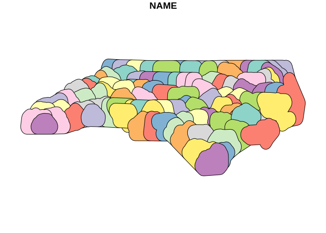

qgis is automatically generated package which originates from qgisprocess and aims to provide calls and simple documentation for each QGIS functions available in core and the most important algorithm providers (GRASS GIS and Saga). The algorithms are automatically extracted from fresh install of latest QGIS version on Ubuntu with packages for GRASS and SAGA installed.
The package is highly experimental and things are quite likely to change a lot in the future. The definition of individual functions can change if it changes in the QGIS.
Installation
You can install the released version of qgis from GitHub with:
The information about local installation are in a vignette vignette("local_instalation").
Using/Loading the package
The idea of the package is that it should not be loaded directly using library(qgis) but rather functions should be called using qgis::function_name() syntax. Even though tests showed (see them here) that loading the package does not takes significant amount of resources. The author’s suggestion is still to avoid loading and use the package::function() notation.
Functions names
The names of the functions follow general pattern of algorithm-provider_algorithm-id with only the native QGIS algorithms using qgis algorithm provider instead of native.
The available providers are: 3d, gdal, grass, native, qgis, sagang. The overall number of available algorithms is 1178.
Functions parameters
Every functions carries three boolean parameters that allow better utilization of these functions in R pipelines and reports. These are .complete_output, .quiet and .messages. The default setting of these variables is such that the calls are as silent as possible and create pretty much no output in R console at all.
Parameter .quiet (default values is TRUE) is the same as in qgisprocess::qgis_run_algorithm() only in qgis the functions are silent by default while in qgisprocess they are talkative.
Parameter .messages (default value is FALSE) controls if messages produced by qgisprocess (such as information about parameters not being set etc.) should be outputed or not.
Parameter .complete_output(default values is TRUE) specifies whether whole QGIS process output should be returned or only first variable in it, which is usually the main output.
These three parameters can also be set as R session options using options(qgis.quiet = TRUE), options(qgis.messages = FALSE) and options(qgis.complete_output = TRUE) to avoid the need to set them for every individual function call.
Example
This allows you to show the help page for the function (at least in RStudio using the key shortcut F1).
Example in the wild
This example uses qgisprocess pipe ability to directly load output to R.
library(sf)
#> Linking to GEOS 3.10.2, GDAL 3.4.1, PROJ 8.2.1; sf_use_s2() is TRUE
nc <- st_read(system.file("shape/nc.shp", package="sf"), quiet = TRUE)
buffered <- qgis::qgis_buffer(INPUT = nc,
DISTANCE = 0.2,
END_CAP_STYLE = "Flat") %>%
st_as_sf()
plot(buffered["NAME"])